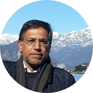

|  |
Tawfiq M. SalehManagind Director of Technology Resources Company- Kuwait B.S. Chemical Engineering, University Of Wisconsin–Madison USA, |
August 2003 - Current:
Managing Director and partner of Technology Resources For General Trading and Contracting Company (TRC). His is responsible for all activities (Technical, Commercial, and planning) of the Company.
June 2001 – 2003:
Technical & Business Development Consultant providing consultancy services to various private local sector companies working in the oil, power and energy sectors, such as ISCO, 3B and UIC in addition to international companies such as Lurgies Lentjes Services. Services include technical, commercial and contractual aspects of project management.
August 1990 – April 2001: held various postions at Kuwait Petroleum Corporation - KPC ( senior, Manager, and executive levels)
April 1978 – August 1990: held various postions in Kuwait National Petroleum Company - KNPC (Process engineer, Senior engineer and Team Leader in Technical Services Department)